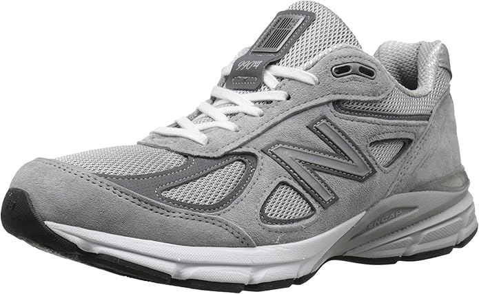
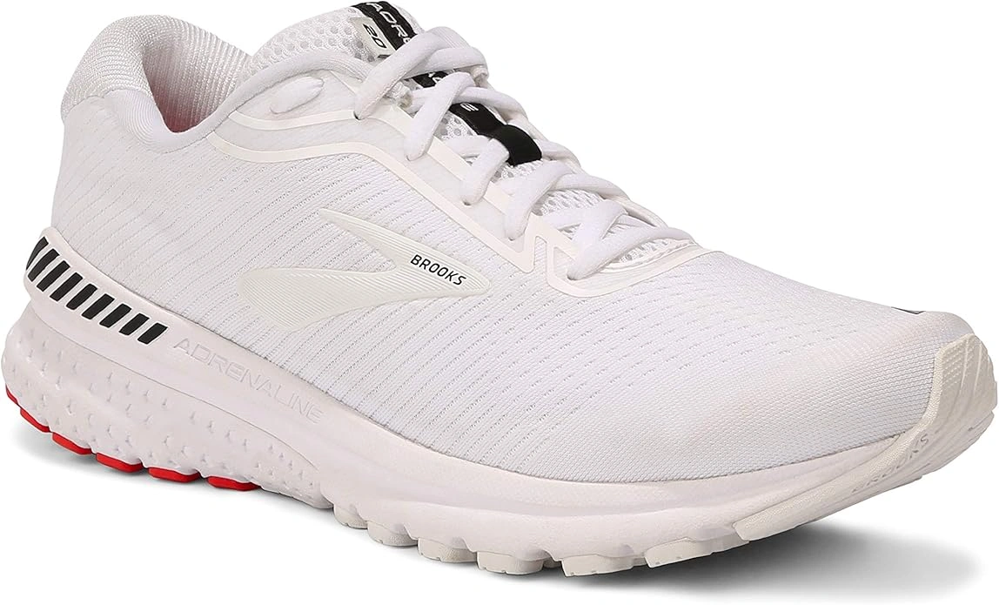
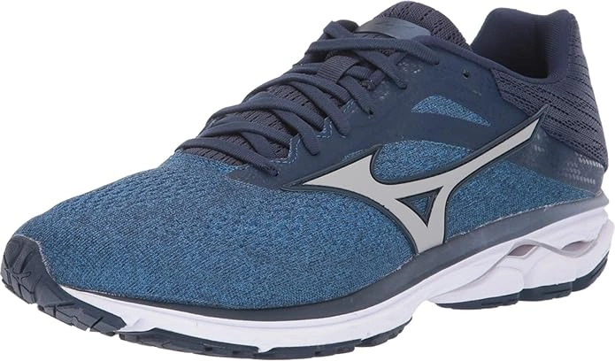
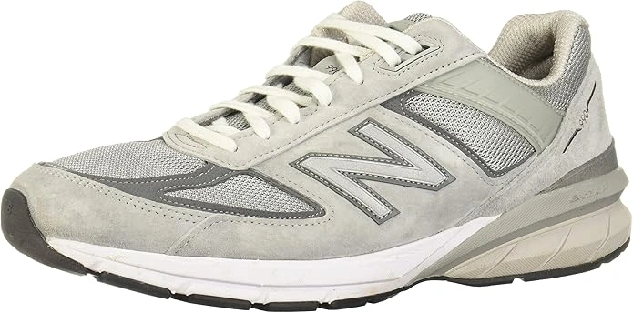
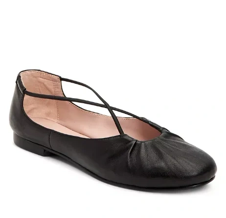
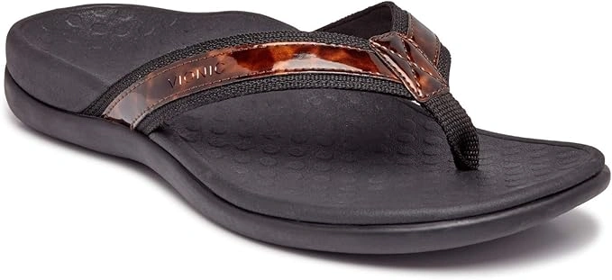
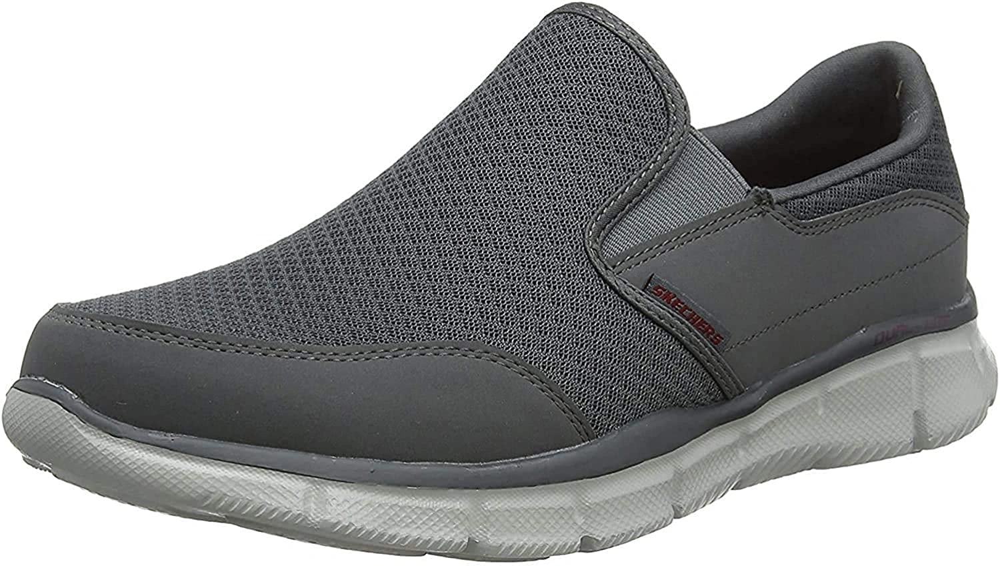
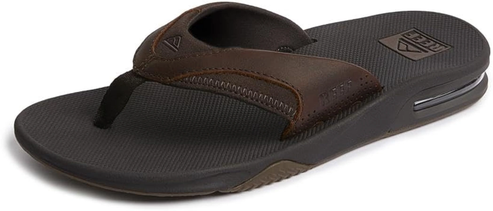
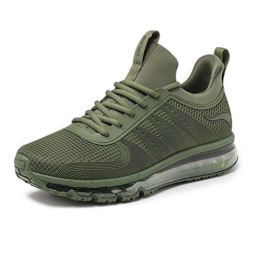

10 Best Shoes for After Hip Surgery 2024
Best Shoes for After Hip Surgery: Now a days hips sugeries are one of the most wanted surgeries in society. After hip surgery, it is suggested that you ought to guarantee you have lightweight and amazingly agreeable shoes that will ease you to deal with different circumstances agreeable.
In the event that you are in rush, we have arranged a speedy guide of top and best shoes after hip substitution that will permit you to pick quality and sturdy shoes after hip substitution
How to put on shoes after hip replacement: Shoes can be extraordinary after a hip substitution yet you will be stunned to understand that some shoe brands can be irritating particularly after hip substitution as not all shoes will coordinate likewise with what is suggested
-
#1
New Balance Castle rock
We likewise chose to incorporate this New Balance Castlerock in this rundown of value shoes after a hip substitution. Think of a quality padded sole innovation which offers you quality help. To be more explicit this ENCAP padded sole innovation guarantees that these shoes are generally more solid regarding when contrasted and different shes available today.
Padding of the this-this Back Pain shoes is quality likewise made conceivable by the accessibility of a collar froth which is best portrayed by a double thickness quality collar froth. We stunned to hear that new equilibrium consistently contribute on utilizing new staff and exploration office to guarantee that their clients are completely content with the item they get from new equilibrium. -
#2
Brooks Adrenaline
Streams Women’s Adrenaline is the other quality shoes after hip substitution that you decide to think about utilizing today. Shoes after hip substitution zone generally difficult time when settling on this choice. the previous summer my child needed to have his hip supplanted and I needed to experience hellfire searching for q quality shoe for him which will guarantee he is agreeable all through the way toward recouping and that is the way I handled this Brooks Adrenaline
Aside from being sued as cinders to wear after hip substitution, it can likewise permit you to appreciate quality help to because of its capacity to offer stunning Overpronation and Stability. This item likewise has a quality air work innovation which has transformed it into entirely breathable shoes. you can utilize this shoe for the longest term of time without its general expectation being destroyed das i8t has a quality manufactured an auxiliary material. -
#3
Mizuno Wave Rider 20

Mizuno Wave Rider is the other quality and best shoes after hip substitution today that you can completely trust on. The elastic sole of these shoes makes an essential part in making this shoe to one of the most favored shoes. The chest area of this shoe is produced using a quality work which is a triple architect and accordingly making your feet to be very much circulated air through regarding when contrasted with different shoes.
The trim up the alternative of these shoes guarantee that wearing this shoe has been made to be simple. the sole is known as cloud wave sole and this by itself promises you a superior capacity to have the option to ready to deal with different conditions. this is additionally moderately shoe and it is likewise connected with high strength and particle accompanies a 100% super froth and a U4IC padded sole -
#4
Mizuno wave rider 23
That shoe is our first pick for this rundown for a few reasons. ASICS Women’s Gel-Nimbus 21 Shoes are shaped of solid material and highlight delicate padding and keep up perpetual go-to. ASICS Women’s Gel-Nimbus 21 Running shoes, Best Shoes After Hip Replacement.
In addition, they won’t have any indication of being worn even after the initial 40 miles that is a direct result of their three layers of super responsive padding and the outsole that is made of excellent scraped spot elastic
This shoes highlight Impact Guidance System innovation that permits the shoe to respond easily to your normal step. Heel of this shoes counter exoskeletal offers more insurance and produces a superior fitting condition for the heel. To assist with calming the Achilles pressure, ASICS shaped these shoes with 3 padded sole innovation. -
#5
New Balance 990 V4 Sneaker
the New equilibrium 990 v4 is an agreeable, stable, just as superior way of life shoe decision for strolling and running shoes. Also, despite the fact that the New Balance 990 v4 truly feels a piece clumsily massive to certain clients because of its plan, it is as yet given gratefulness for its superb fit to the individuals who have finished with hip substitution.
Subsequent to going through the 50 hours on testing the over five shoes, videography and topo incredible degree photography we discovered New Balance Running Shoe to the shoe brand which was more exceptional. hip substitution is viewed as a negligibly obtrusive strategy and along these lines you are needed to expertly pick shoes. New Balance Running Shoe is both agreeable and furthermore accompany a truly reasonable expense. -
#6
Taryn Rose Women’s Fiona Ballet Flat
Taryn Rose Women’s Fiona Ballet Flat est Shoes After Hip Replacement For Walking and Running For Women and Men
That shoe is one of the enthusiastically suggested footwear for knee substitution patients as it gives the necessary solace, security, and style. Taryn Rose creates this shoe in 4 tones, all with the cutest appearance ever. The outsole is manufactured of exceptional elastic to highlight the stun scraped area with zero impact point stature the keep up the steadiness of your feet while strolling.
Taryn embellished its mark on the top side that gives an upscale touch. It likewise has an agreeable footbed. Generally, all the shoe parts are top notch. We think of it as one of the most agreeable level that fir individuals labor for 12 hours. -
#7
Ladies’ Orthaheel, Relax Slipper Comfortable
Ladies’ Vionic, Comfortable Slippers. They give your feet a rest in these very comfortable, radiant shoes. With a movable upper and an orthotic footbed, you will encounter an ideal fit with full help.
Totally adaptable snare and-circle affixing on the instep lash offers an agreeable fit Soft shaped liner with a texture covered footbed Interior treated with Ecofresh antibacterial and smell safe, to help keep your feet cool.
Muscular footbed with profound impact point cup assists with adjusting, backing, and re-adjust the foot to its ordinary shape Light-weight and minimal medium-thickness EVA padded sole assists with taking care of stun Robust human foothold outsole. The tallness of the heel is around 1.50″. -
#8
Skechers Men’s Equalizer Persistent
Sketcher posted one of the most agreeable shoes ever that fits you subsequent to having your hip substitution done.
This shoe is made of a breathable work upper and a fake calfskin that permits your feet to inhale while working, strolling, or running.
Sketchers introduced double gutting side boards that make it so natural and fast to wear, and the guard that has round toe with legitimate fortification. Additionally, the cushioned collar gives more solace to your feet. The covering manufactured breathable to keep your feet cool. The main component is having stun retention and backing gave in the lightweight FlexSole padded sole. The outsole has adaptable foothold. -
#9
REEF Slipper Leather Fanning
All things considered, Reef demanded to put their best flip tumbles that have an elastic sole. This shoe has a container opener in the sole!! Reef manufactured that shoes with a comfortable footbed and curve uphold that helps the plantar fasciitis. That curve backing of this flip failures gives you fulfillment each time you put them on.
What settles on this flip flounders an extraordinary decision for you after the hip medical procedure is the footbed with formed pressure shaped EVA froth that gives stun retaining. Generally speaking, this flip lemon is viewed as an ideal decision for your feet. -
#10
ONEMIX Air Cushion Sport Shoes
ONEMIX Air Cushion Sports Shoes was remembered for this rundown of best shoes after hip substitution because of its beautiful appearance. This shoe is best depicted by the lightweight nature. The manufactured idea of the material which was utilized permits us to be in the better situation of cleaning the shoe and permitting it to dry all the more regularly.
Perhaps you have been anticipating appreciating a quality shoe brand from China at that point consider your cravings cooked this ONEMIX Air Cushion Sports shoe is absolutely a Chinese shoe brand.it accompanies an expanded toe box subsequently your foot will stay agreeable for a very long time conceivable. the part from being related with entirely moderate value this shoe is additionally 100% Breathable and furthermore 1090% very Comfortable